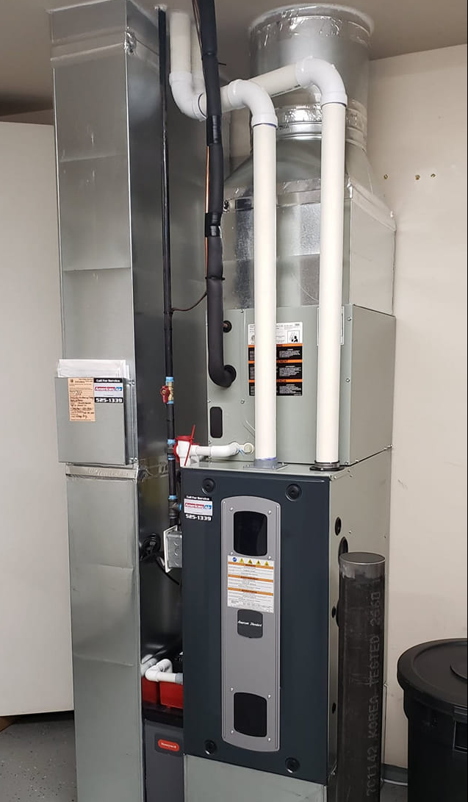

If you're reading this in April in the Walla Walla Valley, there's a decent chance you got through another shoulder season with a furnace that's starting to sound like a coffee grinder. Maybe a tech already came out, gave you a $600–$1,200 repair quote, and said the usual thing — "It'll get you through next winter." Maybe.
We get this question every week: do I fix the old furnace or replace it? Here's exactly how Dan thinks through it when he's standing next to your equipment.
1. The 50% rule (and why it's not quite right)
The old HVAC rule of thumb says: if the repair costs more than 50% of a new furnace, replace it. The rule is a reasonable starting point — but it's not the whole story. A $1,000 igniter job on a 6-year-old 96% AFUE furnace is almost always a repair. The same $1,000 job on a 17-year-old 80% AFUE unit in a cold Walla Walla basement? That's a replace.
The correct version is what we call the age × cost × efficiency rule. Multiply the furnace's age (in years) by the repair cost. If the result is north of $5,000–$6,000, replacement is almost always better long-term — because the remaining lifespan on the old unit probably won't earn back the repair.
2. Age matters more than total cycles
A natural gas furnace in the Valley typically lives 15–20 years. Heat pumps and air handlers, 12–15. If your unit is still under 12 and the repair is reasonable, repair it — heat exchangers rarely fail that early and the modulating gas valves are usually still in good shape.
Between 12–18 years, you're in the gray zone. Past 18, almost every repair is buying time. We have customers in older Walla Walla homes running 22-year-old furnaces that haven't missed a beat — but they've also been on an annual maintenance plan their whole life, and they know the heat exchanger inspection is the ticking clock.
3. The AFUE math — and what it saves you
AFUE = Annual Fuel Utilization Efficiency. It's the percentage of the natural gas you pay for that actually ends up as heat inside your house. Older Valley furnaces are typically 70–80% AFUE. A modern two-stage or modulating unit is 95–98% AFUE.
On a 2,000 sq-ft Walla Walla home burning roughly 800 therms of gas per winter, moving from 78% to 96% AFUE saves about $220–$340/year at current Cascade Natural Gas rates. Over 15 years, that's $3,300–$5,100 back in your pocket — before you count rebates or the Inflation Reduction Act tax credits.

Red flags we look for
When Dan walks into a basement or mechanical room, there are five things he checks before recommending repair:
- Heat exchanger cracks. Non-negotiable. Cracked = replace. Carbon monoxide risk is real.
- Rust around the burner assembly. Usually a sign of bad flue draft or condensate issues. Fixable sometimes, terminal often.
- Soot on the cabinet interior. Combustion problem — could be burner alignment, could be a failing heat exchanger.
- Yellow flame instead of blue. Incomplete combustion. Safety risk, and usually expensive to fix on older units.
- Inducer motor noise that's changed in the last 12 months. Inducer motors don't get better. They get louder, then they stop.
Any one of those alone, we'll quote the repair. Two or more, we're having the replacement conversation — honestly. — Dan, on cracked heat exchangers
When repair is the right call
We're not trying to sell furnaces. Repair is the right call when:
- The unit is under 12 years old and the repair is under 30% of replacement cost.
- The rest of the system (ductwork, gas line, thermostat) is in decent shape.
- The part failing is a wear item — igniter, flame sensor, pressure switch, capacitor, thermostat.
- You're planning to sell the house in the next 2–3 years and the new buyer won't value a fresh install.
For any of those, we'll sharpen the pencil and get you through.
What a replacement actually costs in the Valley
Honest numbers as of early 2026, for a typical 2,000–2,800 sq-ft Walla Walla home:
- 80% AFUE single-stage furnace, like-for-like swap: $4,800–$6,500 installed.
- 96% AFUE two-stage furnace with ECM blower: $7,200–$9,800 installed.
- Modulating 97% AFUE furnace, full upgrade with new flue + condensate: $9,500–$12,500.
- Heat pump + gas furnace hybrid (dual fuel): $14,000–$22,000, minus significant federal and utility rebates.
Wells Fargo Home Projects financing is available through us on qualifying projects — $0 down, OAC, and promotional rates that often make the dual-fuel option cheaper per month than keeping the old furnace on a repair drip.
Dan's bottom line
Before you write a check for a repair on an older furnace, ask three questions:
- Is the unit older than 15?
- Is the repair more than 30% of a replacement?
- Has it needed a repair in the last 24 months?
Two or more yeses and the replacement math is almost always in your favor. If you want a second opinion on a quote you've already received — from us or another shop — we'll come out and walk the equipment with you. No pressure, no sales pitch, and Dan does the assessment personally.